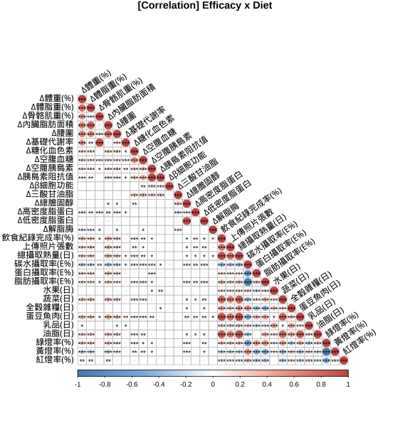

1.4 相關分析(Correlation Analysis)
飲食紀錄(diet) x 成效
減重表現與「飲食紀律」呈現顯著正相關。(飲食紀錄完成度、綠燈率、三大營養素攝取比例、六大類食物攝取量等)。
「飲食紀錄完成度」與飲食紀律有關：
「飲食紀錄完成度」與「綠燈率」、「平均攝取熱量」、「蛋白質、脂肪攝取率」、「蔬菜、蛋豆魚肉、油脂攝取量」呈現正相關。
與「黃、紅燈率」、「碳水化合物攝取率」呈負相關。
六大類食物攝取量：
「蔬菜」、「蛋豆魚肉」、「油脂」與減重成效呈現正相關；且這三類食物彼此呈現正相關。
「水果」、「五穀雜糧」與減重成效成負相關。

初始狀態(baseline) x 成效
減重表現與初始狀態沒有顯著相關；「減脂」表現但BMI、體脂率、腰圍、空腹胰島素、HOMA-IR等初始狀態呈現負相關(i.e., 越胖的人減脂%較低)，可能是因為體脂初始值較高，而導致降幅%變小所致。
此外，根據1.2.2 整體成效分析，體脂肪降幅相較體重降幅明顯，顯示不論初始狀態如何，每一個人在單次療程中減少去的體脂重「可能」差不多(待進一步分析)。
